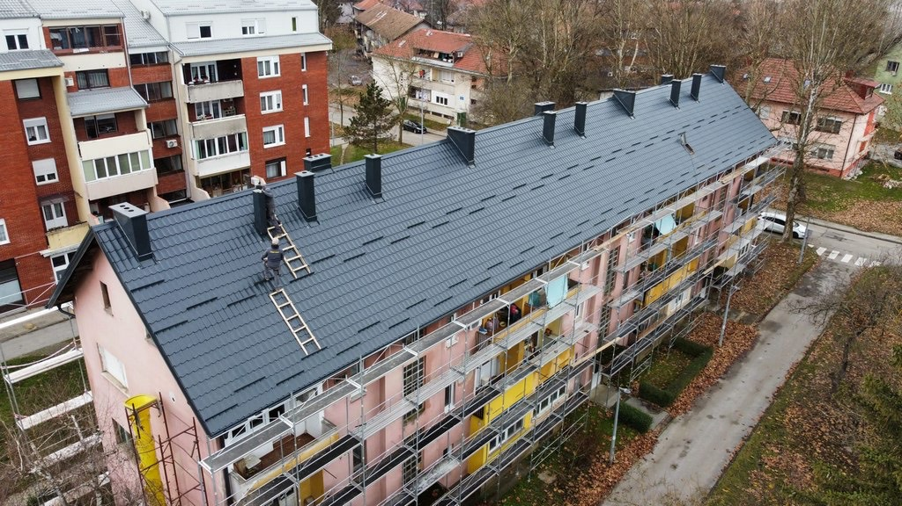
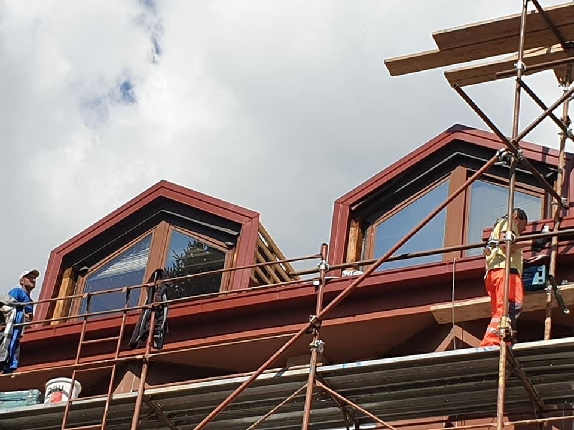
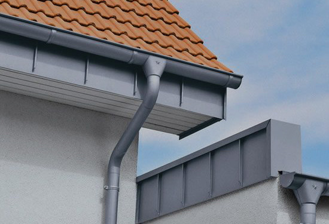
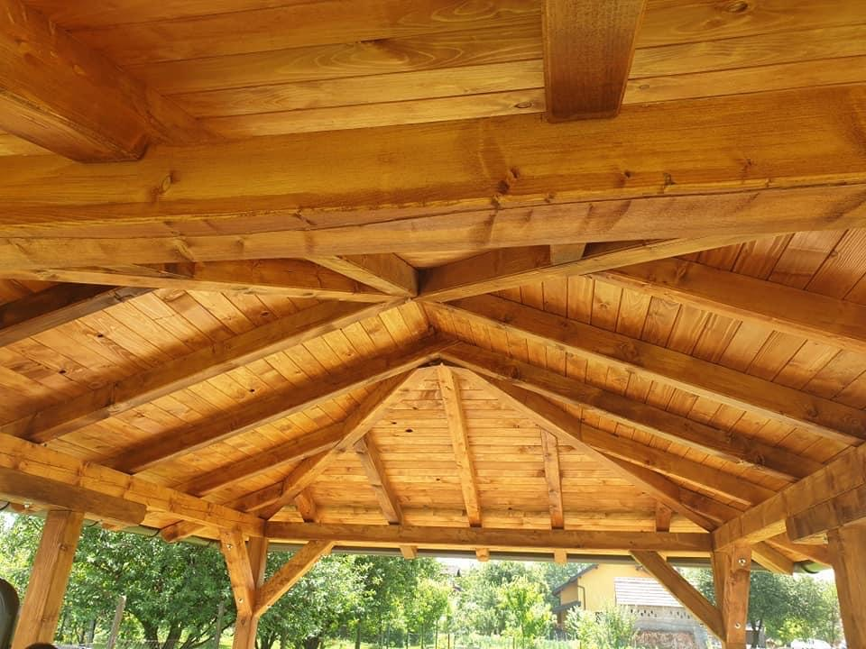
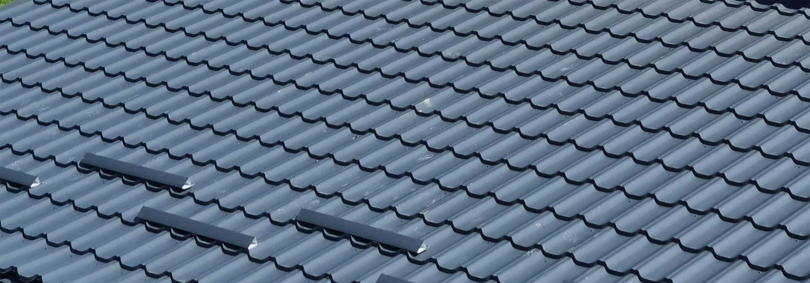
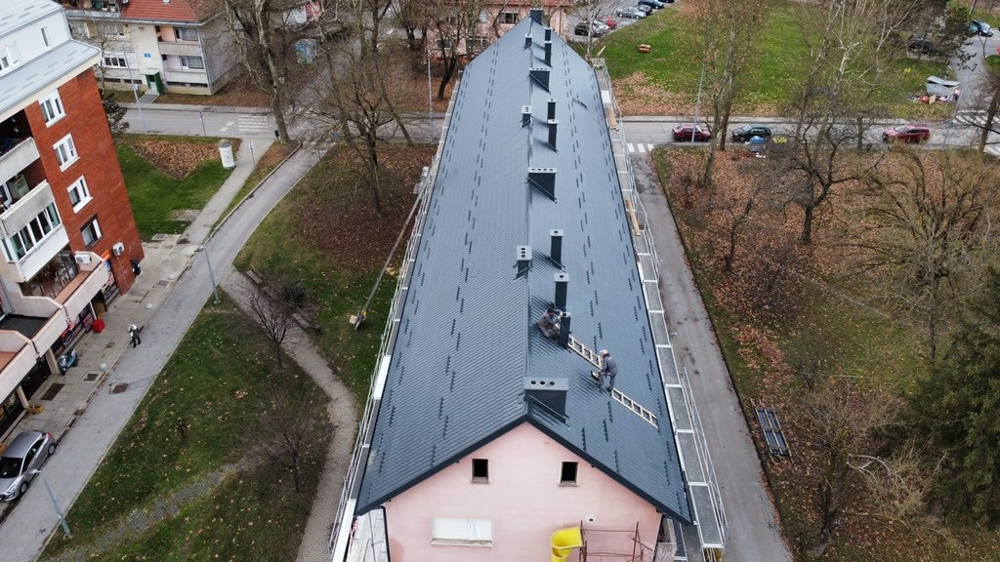
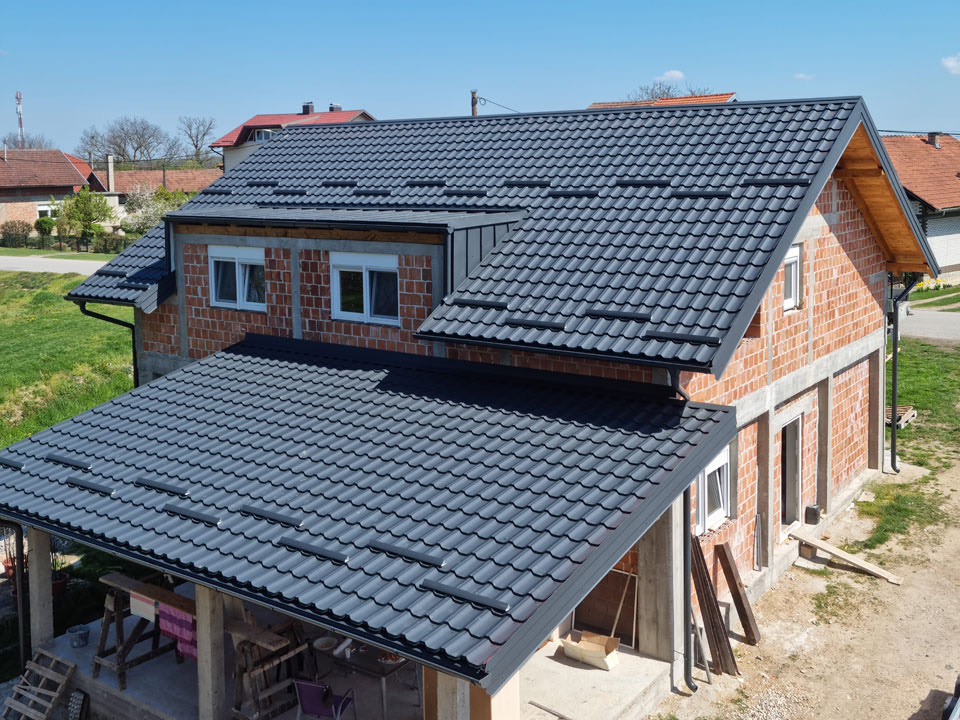
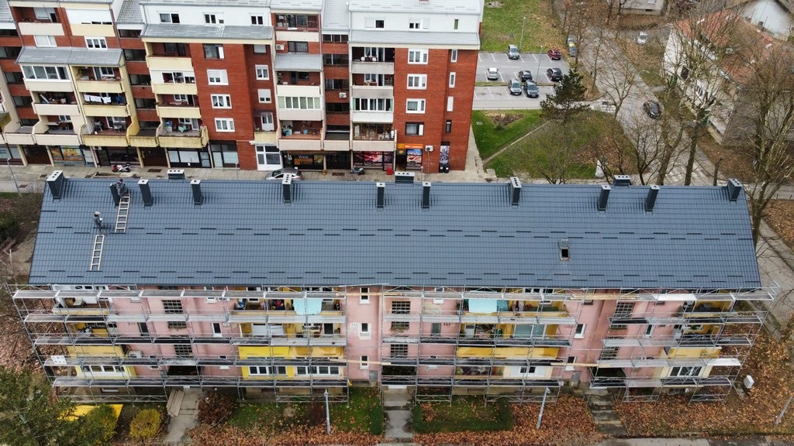

Limarijai krovovi sobiteljskimpotpisom.
Građevinska limarija, krovne i druge drvene konstrukcije, limeni pokrovi te izrada i sanacija dimnjaka. Nastavak obiteljske limarske tradicije koja traje od 1969. godine.

1969Početak obiteljske limarske tradicije

Obrt koji je izrastao iz limarske radionice.
Uslužni obrt MDS Sisak u sadašnjem obliku posluje od 2008. godine i nastavak je obiteljske limarske tradicije još od 1969. godine.
Tradicija vezana uz građevinsku limariju s vremenom se proširila na radove u segmentu krovova, krovnih i drugih drvenih konstrukcija i limenih pokrova.
Radionica trenutno zapošljava 5 stručnih djelatnika s iskustvom u obavljanju svih poslova suvremene građevinske limarije i krovopokrivačkih radova.
Standarde koje tržište postavlja nije moguće ostvariti bez profesionalnog pristupa, stručnosti i visoke odgovornosti. Zato su nam upravo te odlike prioritet, s ciljem dugoročnog i uspješnog poslovanja. Brojni klijenti i partneri uvjerili su se u kvalitetu našeg rada i svojim nam preporukama otvorili mnoga vrata.
Od roga do oluka.
Tri područja rada, jedna radionica: od drvene konstrukcije krovišta, preko pokrova, do svakog opšava i oluka.
Građevinska limarija
Više o usluziIzrada kompletne građevinske limarije za vaš krov, sve na jednom mjestu: sustav opšavnih limova i elemenata oborinske odvodnje.

Krovne i druge drvene konstrukcije
Više o usluziProjektiramo i izrađujemo krovne drvene konstrukcije, krovišta i ostale drvene konstrukcije. Izrađujemo i saniramo dimovodne sustave i dimnjake.

Limeni pokrovi
Više o usluziU ponudi su trapezni limovi i imitacija crijepa. Limeni pokrov štiti krovište od oborinskih voda, a lim se pokazao kao kvalitetan i pouzdan krovni pokrov.


„Standarde nije moguće ostvariti bez profesionalnog pristupa, stručnosti i visoke odgovornosti.”MDS Sisak
Krovovi koje smo pokrili.
Stambene zgrade, obiteljske kuće, sjenice i dimnjaci. Izbor iz naše galerije izvedenih radova.





Više od 20 fotografija s gradilišta: pokrovi, limarija, konstrukcije i dimnjaci.
Pogledajte sve radovePrije nego nazovete.
Koje limene pokrove nudite?
U ponudi su trapezni limovi i lim u obliku crijepa (imitacija crijepa). Limeni pokrov štiti krovište od oborinskih voda i pokazao se kao kvalitetan i pouzdan krovni pokrov.
Izrađujete li i drvenu krovnu konstrukciju?
Da. Projektiramo i izrađujemo krovne drvene konstrukcije, krovišta i ostale drvene konstrukcije.
Radite li dimnjake?
Da, radimo izradu i sanaciju dimovodnih sustava i dimnjaka.
Što spada u građevinsku limariju?
Izrađujemo kompletnu građevinsku limariju za krov na jednom mjestu: sustav opšavnih limova i elemenata oborinske odvodnje.
Kako zatražiti ponudu?
Nazovite 091 943 9301 ili pošaljite upit putem obrasca niže. Upit stiže na info@mds-sisak.hr.
Zatražite ponudu za svoj krov.
Opišite što treba napraviti, a mi ćemo vam se javiti. Za brži dogovor slobodno nazovite.